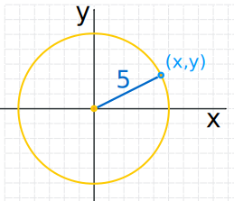
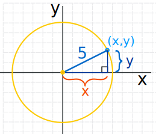
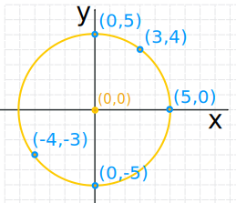
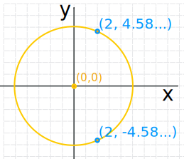
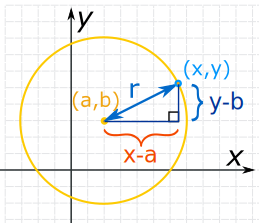
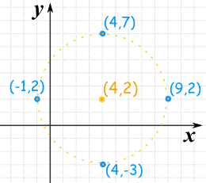

Circle Equations

A circle is easy to make:
Draw a curve that is "radius" away
from a central point.
And so:
All points are the same distance
from the center.
In fact the definition of a circle is
Circle: The set of all points on a plane that are a fixed distance from a center.
Circle on a Graph
Let us put a circle of radius 5 on a graph:

Now let's work out exactly where all the points are.
We make a right-angled triangle:

And then use Pythagoras:
x2 + y2 = 52
There are an infinite number of those points, here are some examples:

| x | y | x2 + y2 |
|---|---|---|
| 5 | 0 | 52 + 02 = 25 + 0 = 25 |
| 3 | 4 | 32 + 42 = 9 + 16 = 25 |
| 0 | 5 | 02 + 52 = 0 + 25 = 25 |
| −4 | −3 | (−4)2 + (−3)2 = 16 + 9 = 25 |
| 0 | −5 | 02 + (−5)2 = 0 + 25 = 25 |
In all cases a point on the circle follows the rule x2 + y2 = radius2
We can use that idea to find a missing value
Example: x value of 2, and a radius of 5
(The ± means there are two possible values: one with + the other with −)
And here are the two points:

More General Case
Now let us put the center at (a,b)

So the circle is all the points (x,y) that are "r" away from the center (a,b).
Now lets work out where the points are (using a right-angled triangle and Pythagoras):

It is the same idea as before, but we need to subtract a and b:
(x−a)2 + (y−b)2 = r2
And that is the "Standard Form" for the equation of a circle!
It shows all the important information at a glance: the center (a,b) and the radius r.
Example: A circle with center at (3,4) and a radius of 6:
Start with:
(x−a)2 + (y−b)2 = r2
Put in (a,b) and r:
(x−3)2 + (y−4)2 = 62
We can then use our algebra skills to simplify and rearrange that equation, depending on what we need it for.
Try it Yourself
"General Form"
But you may see a circle equation and not know it!
Because it may not be in the neat "Standard Form" above.
As an example, let us put some values to a, b and r and then expand it
And we end up with this:
x2 + y2 − 2x − 4y − 4 = 0
It is a circle equation, but "in disguise"!
So when you see something like that think "hmm ... that might be a circle!"
In fact we can write it in "General Form" by putting constants instead of the numbers:
x2 + y2 + Ax + By + C = 0
Note: General Form always has x2 + y2 for the first two terms.
Going From General Form to Standard Form
Now imagine we have an equation in General Form:
x2 + y2 + Ax + By + C = 0
How can we get it into Standard Form like this?
(x−a)2 + (y−b)2 = r2
The answer is to Complete the Square (read about that) twice ... once for x and once for y:
Example: x2 + y2 − 2x − 4y − 4 = 0
Now complete the square for x (take half of the −2, square it, and add to both sides):
(x2 − 2x + (−1)2) + (y2 − 4y) = 4 + (−1)2
And complete the square for y (take half of the −4, square it, and add to both sides):
(x2 − 2x + (−1)2) + (y2 − 4y + (−2)2) = 4 + (−1)2 + (−2)2
Tidy up:
And we have it in Standard Form!
(Note: this used the a=1, b=2, r=3 example from before, so we got it right!)
Unit Circle
If we place the circle center at (0,0) and set the radius to 1 we get:
 |
(x−a)2 + (y−b)2 = r2 (x−0)2 + (y−0)2 = 12 x2 + y2 = 1 Which is the equation of the Unit Circle |
How to Plot a Circle by Hand
1. Plot the center (a,b)
2. Plot 4 points "radius" away from the center in the up, down, left and right direction
3. Sketch it in!
Example: Plot (x−4)2 + (y−2)2 = 25
The formula for a circle is (x−a)2 + (y−b)2 = r2
So the center is at (4,2)
And r2 is 25, so the radius is √25 = 5

So we can plot:
- The Center: (4,2)
- Up: (4,2+5) = (4,7)
- Down: (4,2−5) = (4,−3)
- Left: (4−5,2) = (−1,2)
- Right: (4+5,2) = (9,2)
Now, just sketch in the circle the best we can!
How to Plot a Circle on the Computer
We need to rearrange the formula so we get "y=".
We should end up with two equations (top and bottom of circle) that can then be plotted.
Example: Plot (x−4)2 + (y−2)2 = 25
So the center is at (4,2), and the radius is √25 = 5
Rearrange to get "y=":
there can be two square roots!)
So when we plot these two equations we should have a circle:
- y = 2 + √[25 − (x−4)2]
- y = 2 − √[25 − (x−4)2]
Try plotting those functions on the Function Grapher.
It is also possible to use the Equation Grapher to do it all in one go.